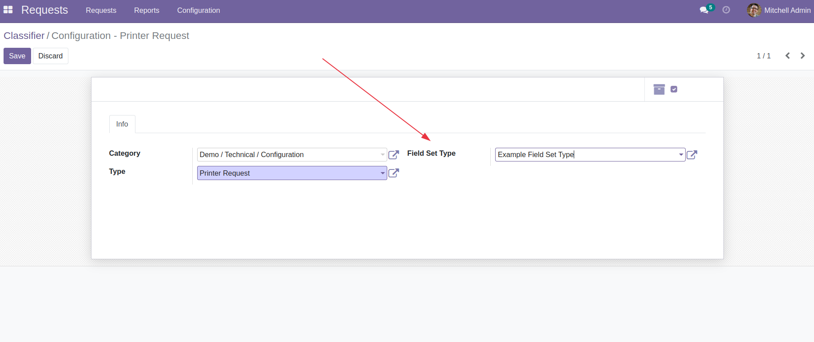
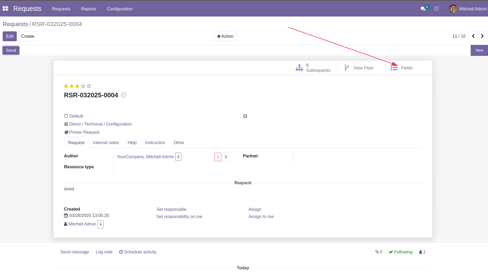
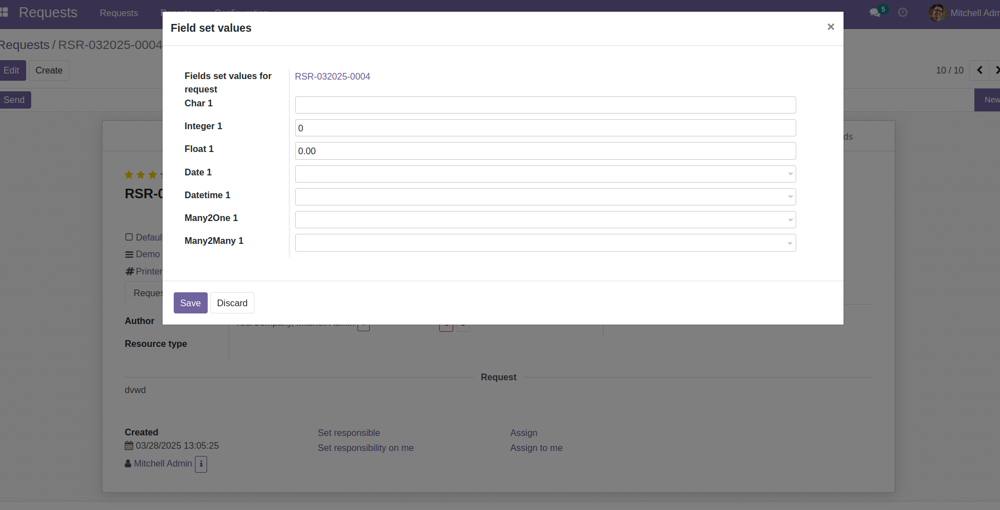

Generic Request Field Set
ITSM | Helpdesk | Service Desk


Generic Request Field Set allows users to associate custom field sets with requests, providing enhanced data collection capabilities tailored to specific request classifiers.
Field sets allow you to associate additional structured data with your requests. Each field set represents a collection of custom fields that can be filled by users when creating or updating requests.
Field set types are defined in the Request Classifier module. They determine which models will be used to store additional data for specific request classifiers, allowing different types, service, category (classifiers) of requests to collect different sets of additional data.
Users can access and fill field sets directly from the request form by clicking the 'Fields' button.
 The module includes an example Field Set Type called "Test Incident Field Set" (model: test.incident.field.set.value), which demonstrates how field sets can be created and used. This example field set contains the following fields:
This example demonstrates the various field types that can be used in your own custom field sets.
There are two ways to create custom field sets:
generic.request.field.set.mixinExample of model definition:
from odoo import models, fields
class MyCustomFieldSet(models.Model):
_name = 'my.custom.field.set'
_description = 'My Custom Field Set'
_inherit = ['generic.request.field.set.mixin']
my_char_field = fields.Char(string="Text Field")
my_boolean_field = fields.Boolean(string="Yes/No Field")
my_selection_field = fields.Selection([
('option1', 'Option 1'),
('option2', 'Option 2'),
], string="Selection Field")
Example of XML data file to register your model as a field set type:
<?xml version="1.0" encoding="utf-8"?>
<odoo noupdate="1">
<record id="field_set_type_my_custom" model="field.set.type">
<field name="name">My Custom Field Set</field>
<field name="field_set_model_id" ref="model_my_custom_field_set"/>
</record>
</odoo>
Then include this XML file in your module's __manifest__.py:
'data': [
'data/my_custom_field_set_type.xml',
],
For easier creation and management of field sets, you can use the generic_request_field_set_builder module, which provides a user-friendly interface for:
This is the recommended approach for most users who don't want to write custom code.
Create your own Bureaucrat ITSM database.


This module is maintained by Center of Research & Development.
We offer Odoo support, implementation, customization, third-party development, integration, and consulting services.